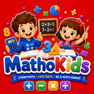

Por qué los niños dicen «odio las mates» — y cómo devolverles la confianza
Cuando un niño dice «odio las mates», casi nunca significa que le falte capacidad. Mucho más a menudo significa que las matemáticas han dejado de parecerle un lugar seguro: un sitio donde puede parecer lento, equivocarse delante de otros o sentirse perdido. Ese sentimiento tiene nombre, ansiedad matemática, y la buena noticia es que las familias pueden hacer mucho para reducirla.
- Cómo se manifiesta la ansiedad matemática
- Por qué aparece
- Qué decir y qué evitar decir
- Reconstruir la confianza paso a paso
- Una rutina de deberes más tranquila
- Trabajar con el profesor
- Cuándo buscar ayuda adicional
1. Cómo se manifiesta la ansiedad matemática
La ansiedad matemática es una reacción de estrés ante los números y las situaciones de matemáticas. Los investigadores han observado que la preocupación ocupa parte de la memoria de trabajo, el espacio mental que usamos para retener números mientras calculamos. Así que un niño ansioso tiene realmente menos espacio para pensar, comete más errores y se pone todavía más nervioso. Romper ese círculo es el objetivo de todo lo que sigue.
| Lo que puedes notar | Lo que tu hijo puede decir |
|---|---|
| Dolor de tripa o cansancio justo antes de los deberes de mates | «No me encuentro bien, ¿lo hago luego?» |
| Va deprisa y adivina para acabar cuanto antes | «¿Es 12? No, ¿15? ¡No lo sé!» |
| Se bloquea ante una pregunta que ayer sabía responder | «Me he quedado en blanco.» |
| Lágrimas, enfado o papeles rotos | «Soy tonto. Todos lo entienden menos yo.» |
| Se niega a intentarlo si no está seguro de la respuesta | «Las mates no son lo mío.» |
La ansiedad también aparece en buenos alumnos. Los niños perfeccionistas, acostumbrados a acertar, a veces son los que más miedo tienen a equivocarse.
2. Por qué aparece
- La presión del tiempo y las respuestas en público. Tener que responder rápido delante de otros es el desencadenante más habitual.
- Un hueco en las bases. Las matemáticas se construyen como una escalera. Si falta un peldaño, por ejemplo el valor posicional o las tablas, todo lo que viene después resulta confuso y el niño concluye que «es malo en mates».
- Los mensajes de los adultos. Frases como «yo tampoco era bueno en mates» se dicen con cariño, pero enseñan al niño que la capacidad matemática se hereda y no cambia.
- La creencia de que solo hay una forma correcta. Cuando se rechaza su propio método, el niño deja de pensar y empieza a adivinar qué quiere oír el adulto.
3. Qué decir y qué evitar decir
Pequeños cambios en el lenguaje tienen un gran efecto, porque cambian lo que el niño cree sobre los errores y la capacidad.
| En lugar de… | Prueba con… |
|---|---|
| «Yo también era malo en mates.» | «Las mates pueden ser difíciles. Vamos a resolverlo juntos.» |
| «¡Venga, si es fácil!» | «Esta hay que pensarla. Tómate tu tiempo.» |
| «No, está mal.» | «Enséñame cómo lo has hecho.» (A menudo el método es casi correcto.) |
| «¡Qué listo eres!» | «Has seguido aunque era difícil. Así es como tu cerebro se hace más fuerte.» |
| «Date prisa.» | «Hacerlo bien importa más que hacerlo rápido.» |
4. Reconstruir la confianza paso a paso
- Busca el nivel en el que tu hijo tiene éxito. Retrocede hasta que el trabajo le resulte fácil, aunque sea un curso por debajo del suyo. Un niño de 10 años que se bloquea con las fracciones quizá solo necesita dominar antes la división.
- Empieza cada sesión con un éxito. Comienza con dos o tres preguntas que sabes que puede resolver. Primero la confianza, después el reto.
- Haz sesiones cortas. Diez minutos tranquilos valen más que cuarenta tensos. Termina con buen sabor de boca.
- Usa objetos y dibujos. Monedas, cuentas, esquemas y rectas numéricas hacen visibles las ideas abstractas y alivian la memoria de trabajo.
- Trata los errores como información. Prueba «el error favorito del día»: mirad juntos un error y averiguad qué enseña.
- Quita el cronómetro. Primero la precisión y la comprensión. La velocidad llegará sola.
- Lleva las mates al juego. Juegos de mesa con dados, cocinar, ir a la compra y las cartas permiten practicar sin sensación de examen.
5. Una rutina de deberes más tranquila
- Elige cada día la misma hora y un lugar tranquilo, después de merendar y descansar un poco.
- Leed juntos el enunciado y pide a tu hijo que lo explique con sus palabras.
- Empezad por la pregunta más fácil para calentar.
- Actúa como entrenador, no como profesor: haz preguntas («¿Qué sabes ya? ¿Qué podrías probar?») en lugar de dar la respuesta.
- Si aparecen las lágrimas, parad. Escribe una nota breve al profesor explicando dónde se ha atascado. Es información útil para él, no un fracaso.
6. Trabajar con el profesor
El profesor a menudo ve a un niño distinto del que hay en casa. Comparte lo que observas: qué temas le generan estrés, si los exámenes cronometrados le bloquean, qué le ayuda en casa. Pregunta qué contenidos vienen después para prepararlos con calma, y si tu hijo podría a veces responder por escrito en lugar de en voz alta. Una conversación breve y amable suele dar lugar a pequeños ajustes que marcan una gran diferencia.
7. Cuándo buscar ayuda adicional
La mayoría de los casos de ansiedad matemática mejoran con paciencia y con los pasos anteriores. Habla con el colegio y, si hace falta, con un profesional sanitario si:
- el malestar dura meses o se extiende al colegio en general;
- tu hijo tiene síntomas físicos como dolor de tripa o mal sueño antes de las clases de matemáticas;
- después de los 7 u 8 años, sigue costándole comparar rápidamente cantidades pequeñas o recordar resultados muy sencillos pese a practicar con regularidad. En algunos niños puede ser señal de discalculia, una dificultad específica de aprendizaje que responde bien al apoyo adecuado.
Práctica sin presión en Kids Learning Hub
Nuestras herramientas gratuitas están pensadas para reducir la presión: el reto diario de la página de inicio tiene solo cinco preguntas y nunca muestra un cronómetro, los juegos Cuenta rápido y Memoria dan seguridad a los más pequeños, y nuestras fichas imprimibles permiten elegir un nivel más fácil para empezar con un éxito.

Práctica paciente y alentadora con un compañero amable, sin cronómetros ni castigos por equivocarse — sin conexión y gratis.
La confianza en las matemáticas se reconstruye igual que se perdió: una pequeña experiencia cada vez. Cada sesión tranquila y lograda le dice a tu hijo: «Yo puedo».
Preguntas frecuentes
¿Qué es la ansiedad matemática en los niños?
Es una reacción de estrés ante los números y las situaciones matemáticas. Ocupa parte de la memoria de trabajo que el niño necesita para calcular, así que comete más errores y la ansiedad aumenta. Es frecuente y se puede reducir.
¿Cómo ayudo a mi hijo que odia las matemáticas?
Vuelve a un nivel en el que tenga éxito, empieza cada sesión corta con preguntas fáciles, usa objetos y dibujos, elimina la presión del tiempo y responde a los errores con curiosidad preguntándole cómo llegó a su respuesta.
¿La ansiedad matemática es lo mismo que la discalculia?
No. La ansiedad matemática es una reacción emocional, mientras que la discalculia es una dificultad específica del sentido numérico. Pueden darse juntas. Si las dificultades con nociones muy básicas continúan pese a practicar con regularidad, habla con el colegio o con un profesional cualificado.